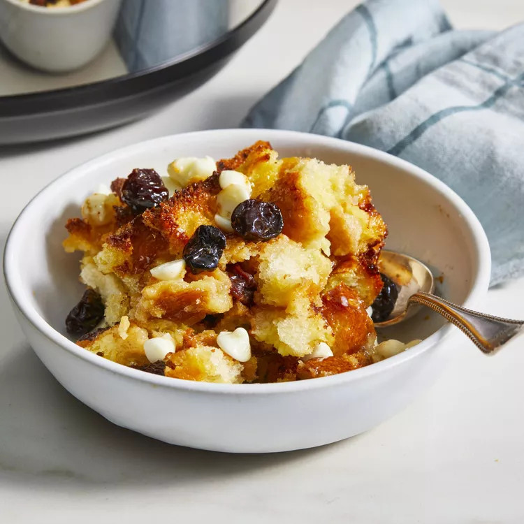

Home
Slow Cooker White Chocolate Bread Pudding

Be the first to rate & review!
Description
Love this white chocolate bread pudding recipe. It is delicious, decadent, and does not require a water bath!
Ingredients
- ½ cup dried cherries
- 3 tablespoons brandy/li>
- 2 tablespoons butter
- 6 cups stale French bread cubes
- ½ (12 ounce) package white chocolate baking chips
- 4 eggs
- ⅓ cup white sugar
- 1 cup half-and-half
- 1 teaspoon vanilla extract
Steps
Step 1
Look over the cherries to make sure all the pits were removed. Combine cherries and brandy in a small bowl. Microwave on high power for 30 seconds. Let stand until cool, about 30 minutes. Drain.
Step 2
Grease a 3 1/2-quart slow cooker with butter. Cover the bottom with 1/2 of the bread cubes. Scatter 1/2 of the cherries and white chocolate chips on top. Layer remaining bread cubes, cherries, and chocolate on top.
Step 3
Whisk eggs and sugar in a medium bowl until smooth. Whisk in half-and-half and vanilla until blended. Carefully pour over the bread mixture, gently pressing down on the bread to immerse in liquid.
Step 4
Cook on High, without lifting the lid, until set and puffed, about 1 hour 15 minutes. Serve warm or at room temperature.
By JenM08 |